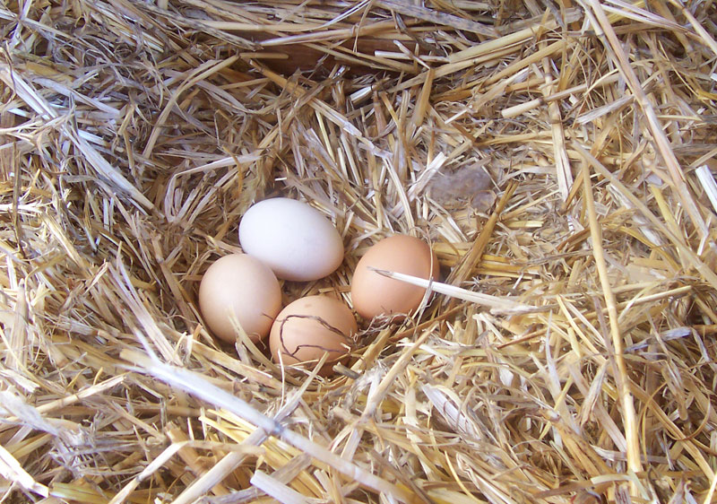
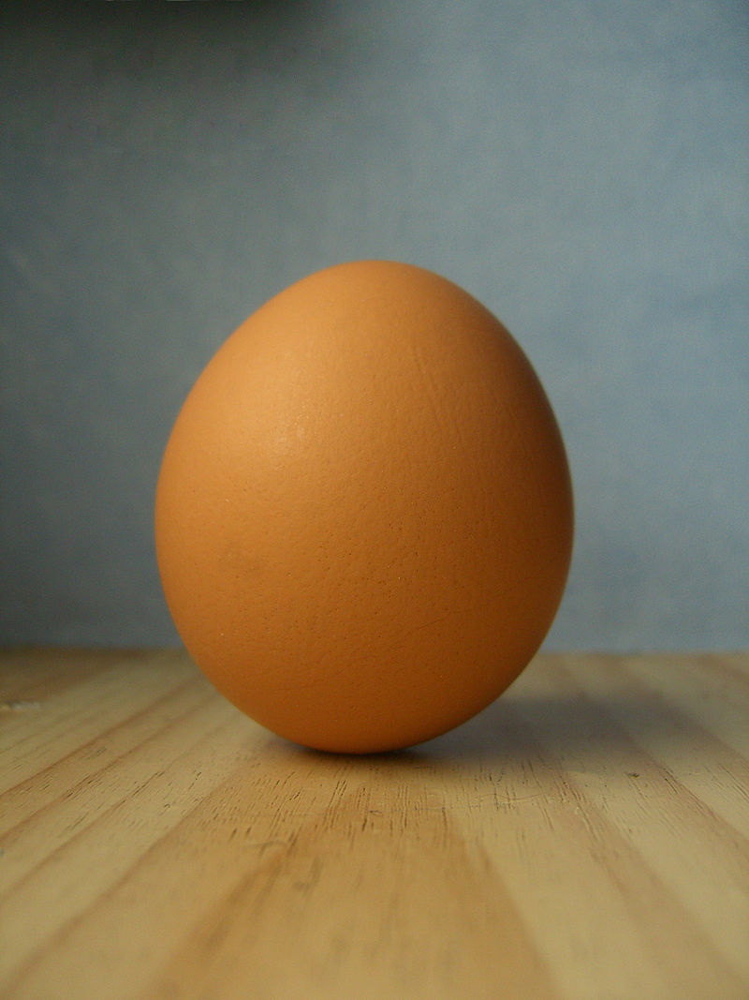

Nest
Egg
Chicks

Bees are flying insects closely related to wasps and ants, known for their role in pollination and, in the case of the best-known bee species, the European honey bee, for producing honey and beeswax. Bees are a monophyletic lineage within the superfamily Apoidea and are presently considered a clade, called Anthophila. There are nearly 20,000 known species of bees in seven recognized biological families. They are found on every continent except Antarctica, in every habitat on the planet that contains insect-pollinated flowering plants.
Some species including honey bees, bumblebees, and stingless bees live socially in colonies. Bees are adapted for feeding on nectar and pollen, the former primarily as an energy source and the latter primarily for protein and other nutrients. Most pollen is used as food for larvae. Bee pollination is important both ecologically and commercially; the decline in wild bees has increased the value of pollination by commercially managed hives of honey bees.
Bees range in size from tiny stingless bee species whose workers are less than 2 millimetres (0.08 in) long, to Megachile pluto, the largest species of leafcutter bee, whose females can attain a length of 39 millimetres (1.54 in). The most common bees in the Northern Hemisphere are the Halictidae, or sweat bees, but they are small and often mistaken for wasps or flies. Vertebrate predators of bees include birds such as bee-eaters; insect predators include beewolves and dragonflies.
Human beekeeping or apiculture has been practised for millennia, since at least the times of Ancient Egypt and Ancient Greece. Apart from honey and pollination, honey bees produce beeswax, royal jelly and propolis. Bees have appeared in mythology and folklore, through all phases of art and literature, from ancient times to the present day, though primarily focused in the Northern Hemisphere, where beekeeping is far more common.
The ancestors of bees were wasps in the family Crabronidae, which were predators of other insects. The switch from insect prey to pollen may have resulted from the consumption of prey insects which were flower visitors and were partially covered with pollen when they were fed to the wasp larvae. This same evolutionary scenario may have occurred within the vespoid wasps, where the pollen wasps evolved from predatory ancestors. Until recently, the oldest non-compression bee fossil had been found in New Jersey amber, Cretotrigona prisca of Cretaceous age, a corbiculate bee. A bee fossil from the early Cretaceous (~100 mya), Melittosphex burmensis, is considered "an extinct lineage of pollen-collecting Apoidea sister to the modern bees". Derived features of its morphology (apomorphies) place it clearly within the bees, but it retains two unmodified ancestral traits (plesiomorphies) of the legs (two mid-tibial spurs, and a slender hind basitarsus), showing its transitional status. By the Eocene (~45 mya) there was already considerable diversity among eusocial bee lineages.
The highly eusocial corbiculate Apidae appeared roughly 87 Mya, and the Allodapini (within the Apidae) around 53 Mya. The Colletidae appear as fossils only from the late Oligocene (~25 Mya) to early Miocene. The Melittidae are known from Palaeomacropis eocenicus in the Early Eocene. The Megachilidae are known from trace fossils (characteristic leaf cuttings) from the Middle Eocene. The Andrenidae are known from the Eocene-Oligocene boundary, around 34 Mya, of the Florissant shale. The Halictidae first appear in the Early Eocene with species found in amber. The Stenotritidae are known from fossil brood cells of Pleistocene age.

The earliest animal-pollinated flowers were shallow, cup-shaped blooms pollinated by insects such as beetles, so the syndrome of insect pollination was well established before the first appearance of bees. The novelty is that bees are specialized as pollination agents, with behavioral and physical modifications that specifically enhance pollination, and are the most efficient pollinating insects. In a process of coevolution, flowers developed floral rewards such as nectar and longer tubes, and bees developed longer tongues to extract the nectar. Bees also developed structures known as scopal hairs and pollen baskets to collect and carry pollen. The location and type differ among and between groups of bees. Most bees have scopal hairs located on their hind legs or on the underside of their abdomens, some bees in the family Apidae possess pollen baskets on their hind legs while very few species lack these entirely and instead collect pollen in their crops. This drove the adaptive radiation of the angiosperms, and, in turn, the bees themselves. Bees have not only coevolved with flowers but it is believed that some bees have coevolved with mites. Some bees provide tufts of hairs called acarinaria that appear to provide lodgings for mites; in return, it is believed that the mites eat fungi that attack pollen, so the relationship in this case may be mutualistc.